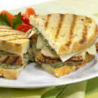
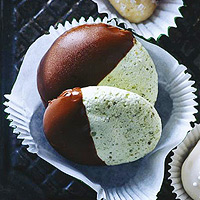

 22 Grilled Chicken Panini by Tyson Grilled & Ready Simple ingredients make for big flavor in this grilled chicken panini with pesto and provolone cheese.
 1 Choco-Pistachio Meringues by Family Circle Low-calorie meringue cookies are great for dieters who yearn for just a nibble of something sweet--like this recipe, which is made with pistachio nuts and dipped in chocolate.